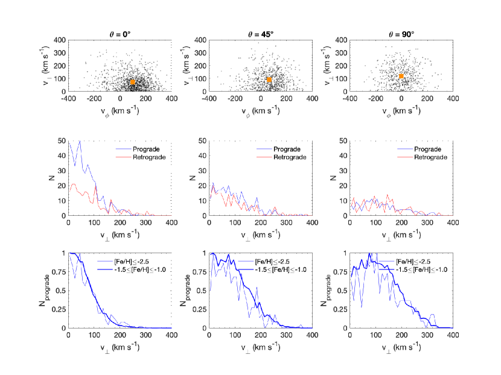
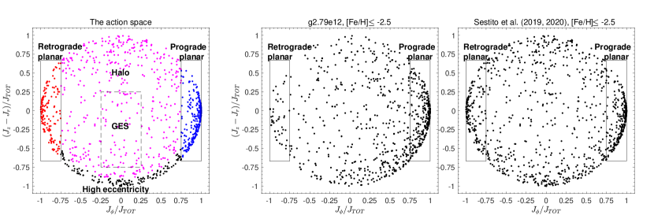
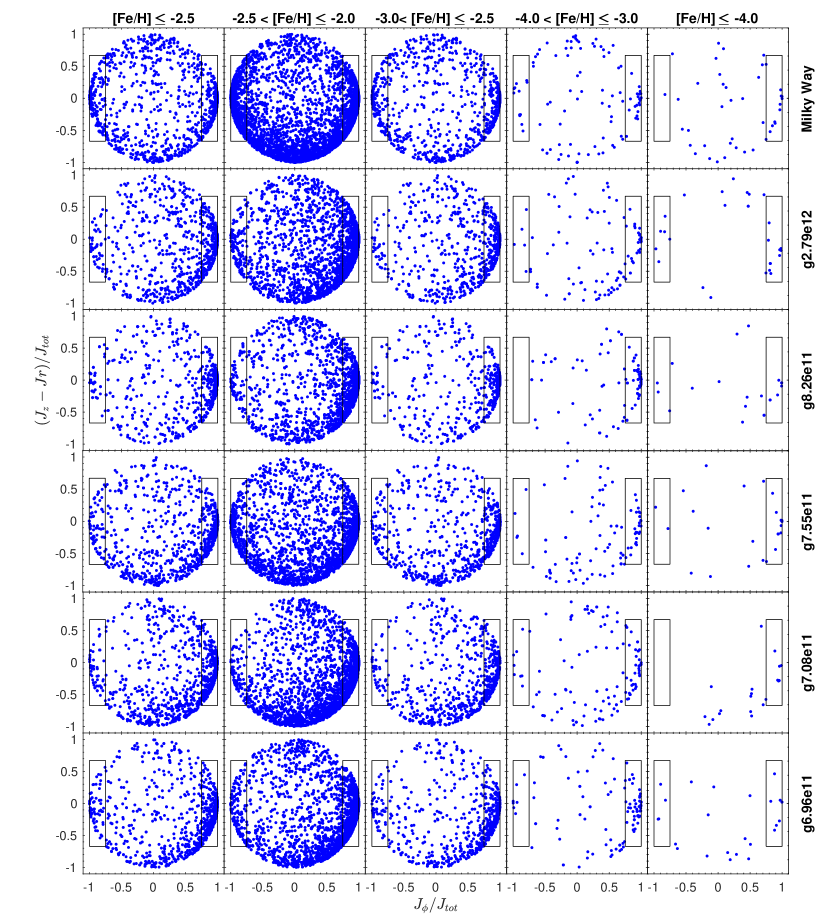
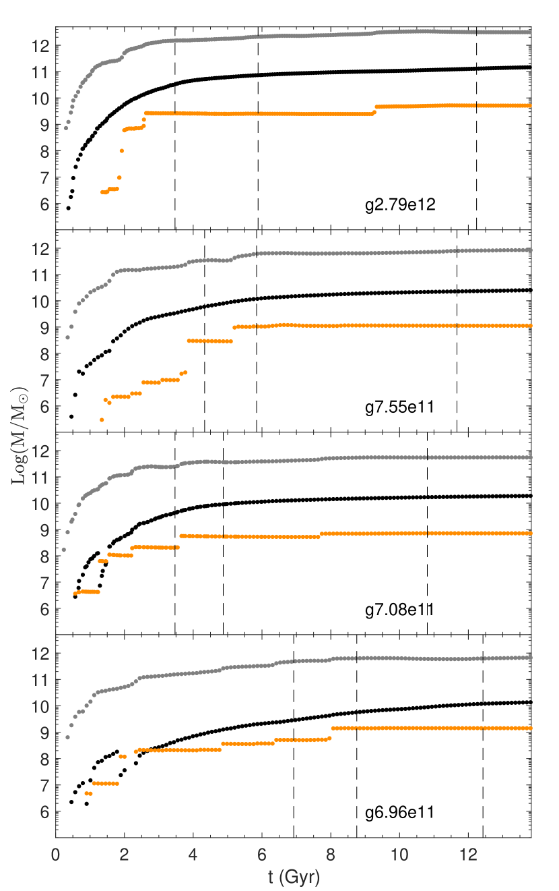
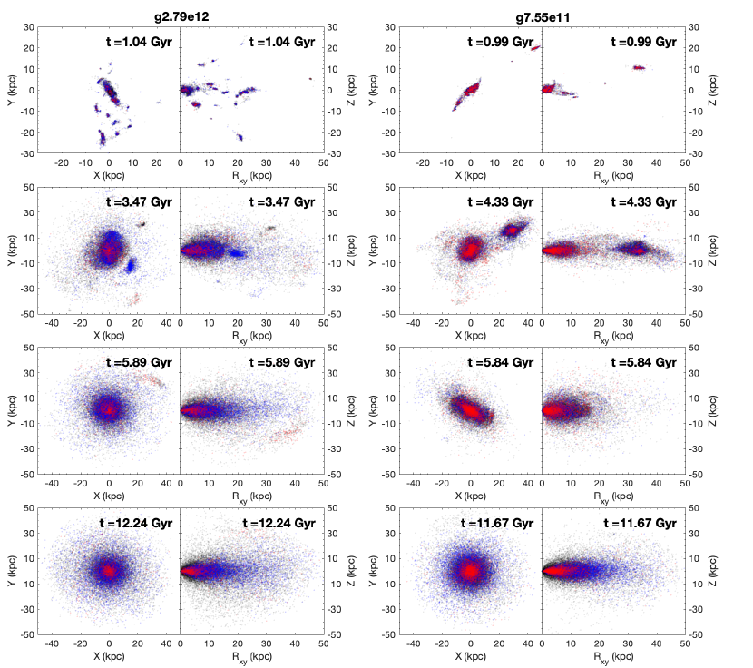
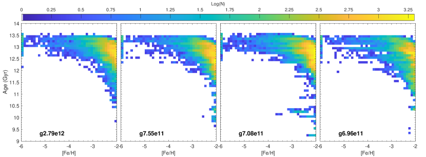
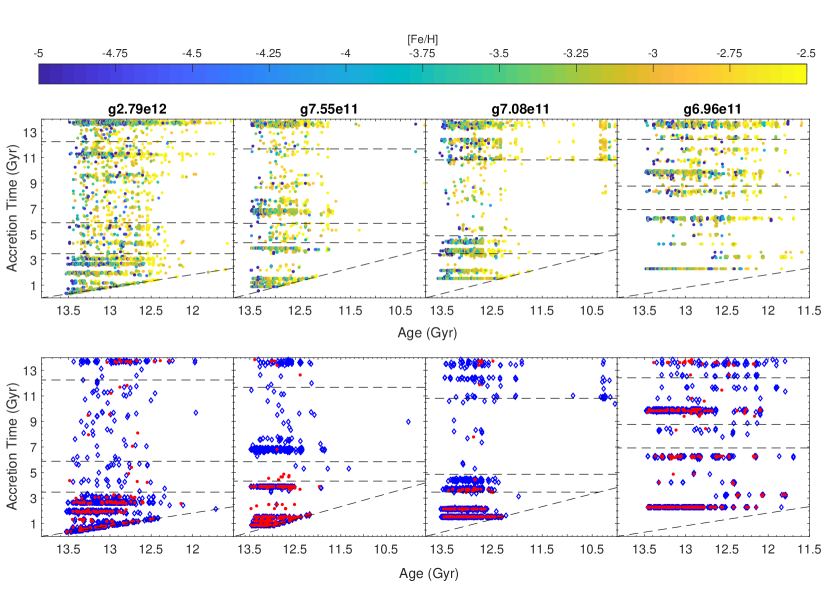
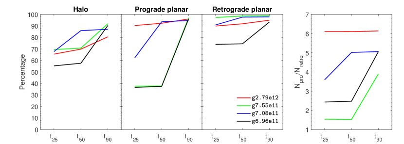

استكشاف أصل النجوم منخفضة الفلزية في مجرات شبيهة بدرب التبانة باستخدام محاكيات NIHAO-UHD
الملخص
توفر حركيات النجوم الأشد فقراً بالمعادن نافذة على تاريخ التكوّن المبكر والالتحام لمجرة درب التبانة. نستخدم هنا 5 محاكيات تكبير كونية عالية الدقة ( جسيمات نجمية) لمجرات شبيهة بدرب التبانة مأخوذة من مشروع NIHAO-UHD، وذلك لاستقصاء أصل النجوم منخفضة الفلزية (). تُظهر المحاكيات جماعة بارزة من النجوم منخفضة الفلزية محصورة في مستوى القرص، كما اكتُشف حديثاً في درب التبانة. وتشير شيوعية هذه النتيجة إلى أن درب التبانة ليست فريدة في هذا الجانب. وبصرف النظر عن تاريخ الالتحام، نجد أن في المئة من النجوم ذات الحركة التراجعية في هذه الجماعة أُدخلت أثناء مرحلة البناء الأولي للمجرات خلال أول بضعة مليارات من السنين بعد الانفجار العظيم. لذلك تبرز نتائجنا الإمكانات الكبيرة للجماعة التراجعية بوصفها مقتفياً لعملية البناء المبكر لدرب التبانة. أما الجماعة القرصية ذات الحركة التقدمية، من ناحية أخرى، فتُلتحم خلال مرحلة التجميع اللاحقة وتعاين كامل تاريخ الالتحام المجري. وفي حالة تاريخ التحام هادئ، تُدخل هذه الجماعة التقدمية أساساً خلال النصف الأول من التطور الكوني ( Gyr)، في حين تكون الاندماجات اللاحقة على مدارات تقدمية، في حالة تاريخ التحام نشط مستمر، قادرة أيضاً على الإسهام في هذه الجماعة. وأخيراً، نلاحظ أن درب التبانة تُظهر جماعة كبيرة نسبياً من النجوم القرصية اللامركزية والفقيرة جداً بالمعادن. وهذه سمة لا تظهر في معظم محاكياتنا، باستثناء محاكاة واحدة ذات مرحلة بناء مبكرة نشطة على نحو استثنائي.
keywords:
المجرة: التكوّن – المجرة: الحركيات والديناميكيات – المجرة: التطور – المجرة: القرص – المجرة: الهالة – المجرة: الوفرة الكيميائية1 المقدمة
إن أكثر النجوم نقاءً كيميائياً، والتي يُرجح أن تضم بعض أقدم نجوم درب التبانة، هي بقايا من التكوّن والتجميع المبكرين لمجرتنا (مثلاً، Freeman and Bland-Hawthorn, 2002; Karlsson et al., 2013). فعلى سبيل المثال، يبيّن El-Badry et al. (2018) أنه في محاكيات FIRE الكونية تشكلت النجوم ذات بعد مدة لا تتجاوز 3 من الانفجار العظيم. وخلال تلك الفترة، كانت مجرة درب التبانة (المشار إليها فيما يلي بـ MW) لا تزال في طور التجميع. لذلك يُتوقع أن تكون هذه النجوم موزعةً على نحو مدعوم بالضغط، أي في المكوّن الكروي؛ إما متموضعة في أعمق جزء من بئر الجهد لمجرة MW إذا التحمت في أزمنة مبكرة، أو منتشرة إلى المناطق الخارجية من الهالة النجمية إذا وُلدت في مجرات قزمة ملتحمة (White and Springel, 2000; Brook et al., 2007; Gao et al., 2010; Salvadori et al., 2010; Tumlinson, 2010; Ishiyama et al., 2016; Starkenburg et al., 2017b; El-Badry et al., 2018; Griffen et al., 2018). وقد تتطابق بعض المدارات من التوزيع المدعوم بالضغط حركياً مع القرص، مع أن عدد النجوم ذات الحركة التقدمية والتراجعية يُتوقع أن يكون متشابهاً في هذا التوزيع. وبدلاً من ذلك، يمكن لبعض النجوم منخفضة الفلزية أن تعبر القرص بحركيات هالية.
غير أنه، بفضل البيانات فائقة الجودة من مهمة Gaia (Gaia Collaboration et al., 2016, 2018, المشار إليه فيما يلي بـ Gaia DR2)، وجد Sestito et al. (2019, المشار إليه فيما يلي بـ S19) أن نسبة كبيرة على نحو مفاجئ (11 نجماً، أي في المئة) من النجوم شديدة الفقر بالمعادن المعروفة آنذاك، وعددها 42 (UMP، )، لا تبتعد كثيراً عن مستوى MW ()، ولها مدارات تغطي طيفاً واسعاً من اللامركزيات، من مدارات شبه دائرية إلى مدارات وردية الشكل. ومن بين النجوم 11 المحصورة في القرص، تملك 10 من نجوم UMP حركة تقدمية، أي في الاتجاه نفسه لدوران قرص MW، في حين يملك نجم UMP واحد مداراً تراجعياً. وقد وسّع Sestito et al. (2020, المشار إليه فيما يلي بـ S20) التحليل الحركي إلى نظام النجوم الفقيرة جداً بالمعادن (VMP، ) باستخدام 583 نجماً من نجوم VMP من مسح Pristine (Starkenburg et al., 2017a; Aguado et al., 2019) و4838 نجماً من نجوم VMP من عينة منقحة من مسح LAMOST (Cui et al., 2012; Li et al., 2018). ووجد S20 أن نسبة كبيرة مماثلة من العينة تشغل حركياً مستوى MW، من نظام VMP إلى نظام UMP. كما بيّنوا أن الحركة التقدمية مفضلة بدرجة كبيرة مقارنة بالمدارات التراجعية. ويقترح S19 وS20 ثلاثة سيناريوهات غير متنافية لتفسير المشاهدات. يتمثل السيناريو الأول في أن هذه الجماعة أُدخلت بفعل أحداث التحام أودعت فيها التوابع نجومها في القرص عبر الاحتكاك الديناميكي والتفاعلات المدية. وفي السيناريو الثاني، وُلدت هذه النجوم في لبنات البناء الغنية بالغاز التي شكلت العمود الفقري لقرص MW البدئي. وأخيراً، في السيناريو الأخير، تشكلت هذه النجوم في موضعها بعد أن استقر الوسط بين النجمي (المشار إليه فيما يلي بـ ISM) في القرص، على الأرجح من جيوب غازية لا تزال نقية كيميائياً.
حلل Di Matteo et al. (2020) عينة من 54 نجماً من نجوم VMP من برنامج ESO الكبير "First Stars"، فوجدوا بصمات حركية شديدة الشبه بتلك لدى S19 وS20. ويقترحون أن القرص السميك لمجرة MW يمتد إلى نظام UMP، نزولاً إلى ، وأن جماعة هذا القرص المبكر تشترك في الخصائص الحركية نفسها لأنها تعرضت لعملية التسخين العنيف نفسها، أي التحام تابع Gaia-Enceladus (Belokurov et al., 2018; Helmi et al., 2018). كما وجد Venn et al. (2020)، عند تحليل الأطياف عالية الدقة لـ 28 نجماً لامعاً منخفض الفلزية ()، أن عينة فرعية محصورة في قرص MW، وتتقاسم مدى واسعاً من اللامركزيات، مع كون الغالبية ذات حركة تقدمية.
نظراً إلى أن النجوم التراجعية لا يمكن تفسيرها بسهولة في سيناريوهات تشكل النجوم في موضعها، فإن وجودها، حتى إن كانت تمثل جماعة أقلية، يفرض قيوداً مهمة على تاريخ التكوّن المبكر للمجرة. ونلاحظ أنه لهذا السبب تحديداً، كُشف عن بعض أحداث الاندماج الكبيرة المهمة في MW من خلال بصماتها التراجعية، مثل Gaia-Enceladus-Sausage (Belokurov et al., 2018; Helmi et al., 2018) وSequoia (Myeong et al., 2019; Barbá et al., 2019) وThamnos (Koppelman et al., 2019). ويبدو أن معلومات إضافية عن المكونات الحركية لمجرة MW مرمزة في الوفرة الكيميائية لنجوم القرص (مثلاً Navarro et al., 2011). ففي الواقع، حتى قبل مهمة Gaia، استُخدمت مثل هذه الخصائص الكيميائية الشاذة، مقترنة بسمات حركية مميزة، لتحديد نجوم حطامية مرتبطة بحدث الاندماج الذي أدخل Cen إلى MW، والذي يرجح أنه متطابق مع Gaia-Enceladus-Sausage (Meza et al., 2005; Navarro et al., 2011). ويُظهر Helmi et al. (2018) وKoppelman et al. (2019) اختلافاً في بين بعض جماعات الهالة الملتحمة والجماعة المفترضة المتكونة في موضعها عند فلزية بين و. ويجد Monty et al. (2020) أن النجوم المرتبطة ديناميكياً بـ Gaia-Enceladus-Sausage وSequoia لها نسبة مختلفة عن نجوم الهالة المجرية. أما بالنسبة إلى النجوم الأشد فقراً بالمعادن، وهي موضوع هذا العمل، فإن قياس وغيرها من مقتفيات عناصر تشكل النجوم (أي عناصر التقاط النيوترونات) يصبح صعباً. علاوة على ذلك، نعلم من أعمال سابقة أن الفروق بين الأنظمة في تصبح أقل وضوحاً عند الفلزية المنخفضة جداً (مثلاً، Venn et al., 2004; Jablonka et al., 2015; Frebel and Norris, 2015)، بينما أظهرت كيمياء عناصر التقاط النيوترونات، مثل اليتريوم واليوروبيوم، أنها أداة واعدة لتشخيص الالتحام (Recio-Blanco et al., 2020).
في هذه الورقة، نستخدم المجرات المحاكية الشبيهة بـ MW الموجودة في محاكيات التكبير الكونية NIHAO-UHD11 1 يرمز UHD إلى الدقة الفائقة جداً. (Buck et al., 2020) لاستقصاء كيفية تجمّع أقدم النجوم وأشدها فقراً بالمعادن في المجرة الرئيسة. ونركز خصوصاً على تلك النجوم المحصورة في القرص في الوقت الحاضر. وتتكون هذه المجموعة من 5 مجرات حلزونية عالية الدقة بدقة ، ومن ثم فهي مثالية لفصل البنى المختلفة للمجرات (Buck et al., 2018, 2019b). وتتيح لنا الدقة تحليل التوزيعين المكاني والحركي لأشد النجوم فقراً بالمعادن، مع التركيز على المنطقة الداخلية من المجرات.
يصف القسم 2 الخصائص الرئيسة لمحاكيات NIHAO-UHD، بينما تُعرض في القسم 3 التحليلات والمناقشات المتعلقة بأصل أشد النجوم فقراً بالمعادن. وفي القسم 3.1 نستقصي دوران المكونات الكروية لنجوم VMP في المحاكيات. وتُعرض المقارنة بين المشاهدات والمجرات المحاكية في القسم 3.2. ويصف القسم 3.3 تكوّن المجرة المحاكية وتاريخ التحامها. وتُعرض علاقة العمر بالفلزية في القسم 3.4، ويُستقصى أصل جسيمات النجوم الأشد فقراً بالمعادن في القسم 3.5. وتُقدَّم الاستنتاجات المستخلصة من هذا التحليل في القسم 4.
2 محاكيات التكبير الكونية NIHAO-UHD
تمثل محاكيات NIHAO-UHD (Buck et al., 2020) مجموعة من المحاكيات الكونية ذات دقة كتلية أعلى وبالشروط الابتدائية نفسها ومعاملات التغذية الراجعة نفسها مثل حزمة محاكيات الاستقصاء العددي لمئة جرم فلكي (Wang et al., 2015, NIHAO). وتعتمد جميع مجرات NIHAO معاملات كونية من كوسمولوجيا Planck Collaboration et al. (2014). لذلك ، و، و، و، و. والعمر الموافق للكون هو . وتتألف كل محاكاة من 64 لقطة متباعدة زمنياً بالتساوي بفاصل قدره Myr. واللقطات النهائية لمحاكيات NIHAO-UHD عند متاحة للعامة على https://tinyurl.com/nihao-uhd، الذي يعيد التوجيه إلى https://www2.mpia-hd.mpg.de/b̃uck/#sim_data.
تتكون مجموعة NIHAO-UHD من ست محاكيات تكبير هي g2.79e12، وg1.12e12، وg8.26e11، وg7.55e11، وg7.08e11 وg6.96e11، حيث يتوافق الاسم مع كتلة هالة المادة المظلمة (المشار إليها فيما يلي بـ DM) في تشغيل المادة المظلمة فقط. وتتراوح الكتلة النجمية للمجرات بين و. وتُحل كل مجرة بأكثر من جسيمات (غاز+نجوم+DM) داخل نصف القطر الفيرِيالي، بينما تحتوي الأقراص النجمية على جسيمات نجمية. وتمتد كتلة جسيمات DM ضمن مجال بين 1–5، وجسيمات الغاز بين 2–9، والجسيمات النجمية بين 0.7–3.0. وقد طُورت المحاكيات بنسخة معدلة من شيفرة الهيدروديناميكا الجسيمية الملساء (SPH) GASOLINE2 (Wadsley et al., 2017)، مع وصفات لتشكل النجوم والتغذية الراجعة كما عُرضت في Stinson et al. (2006) وStinson et al. (2013). وتؤدي وصفات التغذية الراجعة المعتمدة إلى توزيع مكاني للجسيمات النجمية الفتية يتفق جيداً مع التوزيع المكاني للعناقيد النجمية الفتية في المجرات المحلية (Buck et al., 2019a). ويُنفذ الإثراء الكيميائي من المستعرات العظمى الناتجة عن انهيار اللب (SNII) ومن المستعرات العظمى من النمط Ia (SNIa) باتباع Raiteri et al. (1996)، باستخدام مردودات SNII معاد تحجيمها من Woosley and Weaver (1995) ومردودات SNIa من Thielemann et al. (1986). ولا يُفترض أي إثراء مسبق من نجوم Population III، وقد تُتبع الحديد والأكسجين كل على حدة.
| Galaxy | P(VMP) | |||||||||||
|---|---|---|---|---|---|---|---|---|---|---|---|---|
| (per cent) | ||||||||||||
| g2.79e12 | 3.13 | 15.9 | 9.38 | 18.48 | 5.141 | 27.90 | 3.13 | 306 | 5.57 | 1.3 | 12.25 | 0.77 |
| g8.26e11 | 1.32 | 3.40 | 3.96 | 6.09 | 2.168 | 8.26 | 0.91 | 206 | 5.12 | 1.4 | 1.39 | 0.41 |
| g7.55e11 | 0.93 | 2.72 | 2.78 | 6.79 | 1.523 | 7.55 | 0.85 | 201 | 4.41 | 1.4 | 4.13 | 1.52 |
| g7.08e11 | 0.68 | 2.00 | 2.03 | 3.74 | 1.110 | 7.08 | 0.55 | 174 | 3.90 | 1.0 | 4.19 | 2.10 |
| g6.96e11 | 0.93 | 1.58 | 0.93 | 4.79 | 1.523 | 6.96 | 0.68 | 187 | 5.70 | 1.4 | 3.47 | 2.20 |
تتسم مجرات NIHAO-UHD بقرص رقيق ذي طول مقياس وارتفاع مقياس كلي قدره ، وهو ما يطابق خصائص رصدية أساسية لمجرة MW، مثل علاقة العمر بتشتت السرعة في القرص النجمي (Buck et al., 2020) أو الثنائية الكيميائية لنجوم القرص (Buck, 2020). علاوة على ذلك، استُخدمت حديثاً إحدى المجرات المحاكية، g2.79e12، لدراسة التغيرات الجوهرية في طول القضيب النجمي المجري (Hilmi et al., 2020). أما المجرة g1.12e12 فلها شكل كروي، ولذلك لا تُؤخذ في الاعتبار في هذه الدراسة. ويورد الجدول 1 الخصائص الرئيسة للمجرات المحاكية NIHAO-UHD المستخدمة في دراستنا. وللحصول على مناقشة أكثر تفصيلاً لخصائص المجرات، نحيل القارئ إلى Buck et al. (2019c) وBuck et al. (2020).
بالنسبة إلى المجرة المحاكية g8.26e11، لم تُحفظ عدة لقطات مبكرة، مما يعقّد تتبع موضع الجسيمات النجمية عبر الزمن. وبناءً على ذلك، نستبعد هذه المجرة عند تحليل لقطات في أزمنة غير الوقت الحاضر.
3 النتائج والمناقشات
توفر محاكيات NIHAO-UHD مجموعة من الكميات الفيزيائية لكل جسيم، مثل موضعه عند الانزياح الأحمر 0، ، وسرعته بالنسبة إلى مركز المجرة، ، وعمره، وفلزيته، [Fe/H]، وموضع ولادته، . وفي جميع تحليلاتنا، نُحاذي محور في نظام الإحداثيات مع الزخم الزاوي الكلي لنجوم القرص بحيث يقع القرص المجري ضمن مستوى . وباستخدام حزمة AGAMA (Vasiliev, 2019) نستنتج كذلك متجه زخم الفعل المداري، ، لكل جسيم نجمي بما يقابل مداره في الجهد الثقالي الثابت للمجرة المحاكية عند الانزياح الأحمر .
من أجل مقارنة جماعة النجوم القرصية في المحاكيات مع مشاهدات MW، كما في القسم 3.2، نحتاج إلى محاكاة دالة النافذة للمسوحات الفوتومترية والطيفية المستخدمة لاكتشافها. ولا يهدف هذا العمل إلى تحليل عميق لدوال الاختيار وإعادة بنائها؛ غير أننا نحاكي دالة نافذة النجوم المرصودة من نوع VMP في S20، والتي تحتوي أيضاً على النجوم التي حُللت في S19، وذلك باختيار جسيمات نجمية فقيرة بالمعادن قريبة من مواقع النجوم في العينة المرصودة. وكما نوقش أيضاً في S19 وS20، لا تُدخل دوال الاختيار المتعددة التي تفرضها مسوحات الفقر المعدني المختلفة انحيازاً ضد الجماعة التقدمية/التراجعية أو لصالحها. علاوة على ذلك، لا يُتوقع أن تؤدي محاكاة دالة النافذة المكانية إلى محاكاة السمات الحركية لـ MW. وهذا أيضاً غير مرغوب فيه، إذ نرغب في دراسة هذه الخصائص لا في فرضها مسبقاً. وبسبب الاختيار الاعتباطي لاتجاه محاور الإحداثيات الديكارتية بالنسبة إلى مركز المجرة في المحاكيات، فإننا، لكل نجم مرصود من نوع VMP عند الموضع ، نختار أولاً جميع جسيمات VMP النجمية التي تشغل طارة ذات ، ونحدد عرض الطارة بـ ، عند الارتفاع . وعادة ما تملأ جسيمات نجمية متعددة هذا الحجم، وفي هذه الحالة يُنجز الاختيار النهائي للجسيم بانتقاء الجسيم داخل الطارة الذي يقلل الفرق في الفلزية . وبما أن العينات المرصودة في S19 وS20 تستبعد الانتفاخ والقضيب في MW (انظر الملحق في S20)، فإن اتجاه القضيب في المجرات المحاكية لا يؤثر في هذه المحاولة لإعادة إنتاج دالة النافذة. ولا تنطبق محاكاة دالة النافذة إلا على القسم 3.2، حيث نقارن على نحو مباشر أكثر مع المشاهدات، بينما في الأقسام 3.3، 3.4، و3.5 تؤخذ في الاعتبار جميع نجوم VMP () التي لها مسافة من مركز المجرة وتستبعد منطقة الانتفاخ ().
3.1 هل تتبع النجوم منخفضة الفلزية المحصورة في القرص توزيعاً كروياً؟
تقطن النجوم الأشد فقراً بالمعادن أساساً المكوّن الكروي لمجرة MW. غير أن المشاهدات أشارت حديثاً (مثلاً، Sestito et al., 2019, 2020; Di Matteo et al., 2020) إلى أن كسراً غير مهمل من هذه النجوم محصور حركياً في القرص، مع تفضيل للحركة التقدمية. ومن الطبيعي أنه حتى لو كانت جميع النجوم موزعة في مكوّن كروي غير دوار أو بطيء الدوران، لكان من المتوقع أن تتراكب مجموعة فرعية منها مع القرص في أي لحظة، وأن تكون مجموعة فرعية أصغر منها محصورة حركياً في القرص. وبالاستفادة من اكتمال محاكياتنا، حيث يمكننا، خلافاً للمشاهدات، تقييم الجماعة الكاملة الفقيرة بالمعادن، من المفيد أن نكمّم ما إذا كان عدد النجوم الفقيرة بالمعادن المحصورة حركياً في القرص يتجاوز التوقعات من توزيع كروي (دوار أو غير دوار).

ولهذه الغاية، نجري التمرين الآتي: نختار جسيمات النجوم منخفضة الفلزية () في محاكيات NIHAO-UHD الموجودة مكانياً في القرص النجمي (أي قريبة من مستوى في نظام الإحداثيات)، مع استبعاد منطقة الانتفاخ (). ويُعرض توزيعها في فضاء السرعة الدورانية مقابل السرعة العمودية في اللوحة العلوية اليسرى من الشكل 1، ويشير إلى أن المكوّن الكروي له دوران تقدمي بطيء في هذه المحاكاة (g8.26e11). وهذه الإشارة موجودة باستمرار في المحاكيات 5 المدروسة في هذا التحليل. وفي اللوحتين العلويتين الوسطى واليمنى من الشكل 1، يُدار نظام الإحداثيات حول المحور x، بحيث يتحرك القرص النجمي خارج مستوى وإلى زاويتين قدرهما و على التوالي. وفي إطار الإسناد الجديد هذا، نطبق اختيار الجسيمات النجمية نفسه. ومع ازدياد زاوية الدوران، ينخفض متوسط السرعة الدورانية للمكوّن الكروي، مما يوضح أن الدوران هو بالفعل الأقوى في مستوى . وسيؤدي هذا الدوران إلى سحب جسيمات نجمية نحو القرص وجعلها تدور معه، وإن كان بسرعة دورانية أصغر من سرعة القرص (انظر الشكل 7 من Buck et al., 2020, لمنحنى الدوران لهذه المجرات المحاكية).
في الصف الثاني من لوحات الشكل 1، نصحح السرعة الدورانية بمتوسط دوران الجماعة ونقيس عدد الجسيمات النجمية التقدمية والتراجعية بدلالة السرعة العمودية. وتُختار هاتان الجماعتان بناءً على سرعتهما الدورانية المصححة، في المجال للجسيمات النجمية التقدمية، وفي المجال نفسه بعلامات معاكسة للجسيمات النجمية التراجعية. وفي حالة توزيع كروي حول متوسط الدوران، ينبغي أن يكون كسر المدارات التقدمية والتراجعية متساوياً وثابتاً بصرف النظر عما إذا كان المستوى المختار يتطابق مع القرص المجري أو يقع بزاوية. غير أننا نرى أنه عند توجد غلبة للنجوم الفقيرة بالمعادن ذات الحركة التقدمية والمحصورة بسرعات عمودية صغيرة (أي لا تبتعد كثيراً عن مستوى القرص). وبالنسبة إلى المستويات المدارة خارج القرص (اللوحتان الثانية والثالثة في الصف الأوسط من الشكل 1)، يكون عدد النجوم التراجعية والتقدمية متشابهاً ويعتمد بدرجة أضعف على السرعة العمودية.
تُظهر اللوحات السفلية في الشكل 1 مقارنة بين الجماعة التقدمية منخفضة الفلزية والجماعة التقدمية الأعلى فلزية التي تحتوي على القرص السميك (). وتشير هذه اللوحات إلى أن الجماعة منخفضة الفلزية لها توزيع مشابه لتوزيع الجسيمات النجمية الأعلى فلزية، ولا سيما عند السرعات العمودية المنخفضة وزاوية الدوران الصغيرة. وهذا يعني أن جماعة الجسيمات النجمية القرصية التقدمية منخفضة الفلزية تتصرف على نحو مشابه للقرص السميك، ومن المرجح أن تتجاوز العدد المتوقع من الجسيمات النجمية المستمدة من توزيع كروي بسيط وبطيء الدوران.
إن تفضيل الحركة التقدمية بين النجوم الفقيرة جداً بالمعادن في منطقة القرص المحاكي يتفق نوعياً مع المشاهدات (مثلاً، Sestito et al., 2019, 2020). وبينما تستضيف المحاكيات مكونات كروية دوارة بوضوح، لا تزال الحركة المتوسطة لمجرة MW موضع نقاش. فقد وجد حديثاً، بفضل مسح LAMOST (Cui et al., 2012)، Tian et al. (2019, 2020)، أن المكوّن الكروي في MW يدور ببطء بحركة تقدمية ()، وأن السرعة الدورانية تنخفض عند مسافات أكبر. وتعقد البنى الملتحمة في هالة MW، سواء كانت تراجعية أو تقدمية، تقدير السرعة الدورانية للمكوّن الكروي، ويمكن أن تؤدي إلى نتائج مختلفة تبعاً للمقتفيات المستخدمة (Deason et al., 2011).
وخلاصة القول إننا نرى، على الرغم من الدوران الأكبر أهمية للمكوّن الكروي في هذه المحاكيات مقارنة بـ MW، وجود بصمة واضحة فوق ذلك لجماعة منخفضة الفلزية جداً تقيم مكانياً وحركياً في قرص (أثخن)، تماماً كما نرى في مجرة MW. ورغم أن أياً من هذه المحاكيات لا يشبه MW بدقة في تاريخ تكوّنها، فما زال هناك الكثير مما يمكن تعلمه من دراسة أصل هذه الجماعة التي تبدو شائعة عبر المجرات المحاكية المختلفة. وفي القسم التالي، سنقدم مقارنة أكثر تفصيلاً بين أنواع المدارات التي تمتلكها هذه الجسيمات النجمية في المحاكيات وبين المشاهدات في MW، وسنسعى إلى فهم أعمق لأصل هذه الجماعات ذات الخصائص المدارية المختلفة في القسم 3.5.
3.2 محاكيات NIHAO-UHD في مقابل قرص MW المرصود منخفض الفلزية
تُعد متغيرات الفعل-الزاوية (المشار إليها فيما يلي بمتجه الفعل، أو الفعل) أداة مفيدة لتحليل الجماعات الديناميكية. وبوجه خاص، يمكن لإحداثيي الفعل و أن يكشفا جماعة من نجوم VMP في قرص MW، كما أبرز ذلك S19 وS20.

ليست المجرات المحاكية نماذج لمجرة MW. وهذا يعني أن حركيات الجسيمات النجمية قد تختلف منهجياً عن حركيات MW بسبب الفروق في الكتلة والتوزيع المكاني لكل من DM والنجوم والغاز. ولتقليل هذه الآثار، نقيس مركبات الأفعال بمعيارها. ويوضح ذلك في الشكل 2، حيث نقارن فضاء الفعل لـ g2.79e12 (اللوحة الوسطى) بفضاء مشاهدات MW من S19 وS20 (اللوحة اليمنى). وتُختار جسيمات VMP النجمية في المحاكاة بالطريقة المذكورة أعلاه لمحاكاة دالة النافذة الرصدية. يبيّن هذا المخطط مركبة الفعل السمتية مقابل الفرق بين مركبة الفعل العمودية ومركبة الفعل القطرية ، حيث يُطبّع كلا المحورين بمعيار متجه الفعل . في فضاء الفعل هذا، تشغل النجوم ذات المدارات القرصية، التقدمية والتراجعية، مناطق ذات عالية و منخفضة، على التوالي. لذلك نعرّف الجسيمات النجمية ذات المدارات التقدمية والقرصية بأنها محصورة في المنطقة ذات ، والجسيمات النجمية ذات الحركة التراجعية المحصورة في القرص بأنها ذات . وفي أسفل هذا الفضاء توجد جسيمات نجمية محصورة في القرص لكنها ذات مدارات قطرية جداً (أي مدارات لامركزية). وتشغل الجسيمات النجمية ذات الحركيات الشبيهة بالهالة بقية الفضاء.

| Galaxy | |||||
|---|---|---|---|---|---|
| Milky Way | 1.72 | 1.89 | 1.67 | 1.82 | 11.11 |
| g2.79e12 | 7.14 | 9.09 | 8.33 | 6.25 | 2.33 |
| g8.26e11 | 9.09 | 12.50 | 8.33 | – | 2.33 |
| g7.55e11 | 3.45 | 3.13 | 3.23 | 6.25 | 7.14 |
| g7.08e11 | 6.25 | 7.69 | 6.67 | 5.00 | – |
| g6.96e11 | 5.56 | 7.69 | 5.88 | 7.14 | 2.00 |
يعرض الشكل 3 فضاء الفعل نفسه كما في الشكل 2، لكنه مقسم إلى صناديق فلزية لجميع المجرات المحاكية NIHAO-UHD22 2 بالنسبة إلى g8.26e11، فإن متغيرات الفعل-الزاوية آمنة للاستخدام لأن حسابها مستقل عن لقطات الكون المبكر. وكذلك لمجرة MW. ومن هذا المخطط، يمكن تمييز جماعة من النجوم القرصية بوضوح في جميع المحاكيات، من عينات VMP إلى العينات الأشد فقراً بالمعادن. ويُظهر فضاء الفعل في الشكلين 2 و 3 أن هذه الجماعة من الجسيمات النجمية القرصية ذات الحركة التقدمية تمتد على مدى واسع من اللامركزيات (من قيم منخفضة إلى عالية لـ ، إذ تشغل الحد السفلي من فضاء الفعل). علاوة على ذلك، وكما في مشاهدات MW (Sestito et al., 2019, 2020)، تُظهر المجرات المحاكية بعض النجوم المحصورة في القرص ذات المدارات التراجعية. وعلى غرار المشاهدات، تكون العينة التقدمية أكثر عدداً من العينة التراجعية في جميع المجرات وعند جميع الفلزيات. ويورد الجدول 2 النسبة بين الجماعتين القرصيتين التقدمية والتراجعية، ، بدلالة الفلزية والمجرة المحاكية. وفي معظم المجرات المحاكية تكون هذه النسبة ، باستثناء g7.55e11 التي لها نسبة أقل قدرها . وهذه الأعداد أعلى بكثير مما يُرصد في MW ()، كما يرد أيضاً في الجدول 2. وهذا يشير إلى أن المحاكيات تضم جماعة أكبر من النجوم التقدمية عند الفلزية المنخفضة. وكما أشرنا سابقاً، لكل مسح فوتومتري وطيفي دالة اختيار خاصة به في البحث عن النجوم الفقيرة بالمعادن؛ غير أن أياً منها لا ينبغي أن يفرض انحيازاً لصالح الجماعة التراجعية والتقدمية أو ضدها. وفي القسم 3.1، نورد أن المكونات الكروية للمجرات المحاكية تدور ببطء بحركة تقدمية، في حين أن المكوّن الكروي لمجرة MW يدور ببطء في أحسن الأحوال. وقد يؤثر هذا الاختلاف في المقارنة المباشرة لنسب .
تكشف المقارنة الدقيقة بين MW المرصودة الفقيرة بالمعادن والمجرات المحاكية NIHAO-UHD في الشكل 3 عن سمة أخرى مثيرة للاهتمام في نصف الدائرة السفلي من فضاء الفعل (، )، خارج الصناديق السوداء. فعند النظر إلى لوحات MW، تظهر كثافة زائدة واضحة للنجوم في هذه المنطقة، وهي سمة لا تضاهيها معظم المحاكيات باستثناء g7.55e11 على نحو نوعي. وفي هذا الموضع من فضاء الفعل نجد نجوماً ذات حركة كبيرة في المركبة القطرية ( كبيرة)، مقارنة بحركة أصغر على المحور العمودي ()، ومن ثم فهي نجوم قرصية ذات لامركزية عالية، وغالبيتها على مدارات تقدمية. وتُعرض أدناه مناقشة أعمق لأصل هذه البنية المدارية.
3.3 تاريخ نمو المجرات

إن تتبع الهالات وخصائصها، مثل الكتلة (مكونات DM والغاز والنجوم) والموضع، مفيد لفهم أفضل لكيفية نمو المجرات المحاكية. وتُعرض في الشكل 4 الكتلة النجمية الكلية ضمن نصف القطر الفيرِيالي للهالة الرئيسة، والكتلة النجمية الكلية للمادة الملتحمة (المقيسة أيضاً ضمن نصف القطر الفيرِيالي للمجرات القزمة قبل الالتحام)، والكتلة الفيرِيالية بدلالة الزمن الكوني. ولكل مجرة محاكية، يُشار بخطوط عمودية إلى الزمن الذي تجمع فيه المحاكاة 25 في المئة ()، و50 في المئة ()، و90 في المئة () من كتلتها النجمية الحالية. وتصل المحاكيات g2.79e12، وg7.55e11، وg7.08e11 إلى و بعد و، على التوالي. ومن ناحية أخرى، في المحاكاة g6.96e11 يحدث ذلك عند و. ويمكن تفسير ذلك بعملية التحام كتلي أكثر استمرارية في هذه المحاكاة الأخيرة، حيث تمثل الكتلة الملتحمة الكلية كسراً كبيراً من المجرة النهائية (انظر أيضاً الشكل 3 من Buck et al., 2020).

يعرض الشكل 5 الإسقاط على مستوى ومستوى (حيث يُختار نظام الإحداثيات بحيث يصطف محور مع الزخم الزاوي الكلي للقرص النجمي) لمواضع جسيمات VMP عند 4 أطر زمنية مختلفة للمجرتين المحاكيتين g2.79e12 وg7.08e11. وتبيّن الأشكال 4 و 5 أنه، في أول بضعة ، تندمج لبنات البناء المجرية (التي ستكون أكثرها كتلة السلف الرئيس لدرب التبانة) ذات الكتلة معاً وتجمع المجرة البدئية. وتجلب لبنات البناء هذه جسيمات النجوم الأشد فقراً بالمعادن، إلى جانب الغاز وDM. وبمجرد أن تُجمع المجرة البدئية، تصبح أحداث اندماج أخرى مسؤولة عن جلب مزيد من جسيمات VMP النجمية إلى البنية الرئيسة. ويختلف عدد الاندماجات المتأخرة والكتلة التي تسهم بها من محاكاة إلى أخرى، من تاريخ التحام هادئ بعد Gyr في g2.79e12 وg7.08e11 إلى تاريخ اندماج أكثر اضطراباً واستمراراً في g6.96e11 وg7.55e11.
كما ذُكر من قبل، فإن المحاكاة g7.55e11 هي الأقرب مطابقة لمشاهدات الخصائص المدارية لمجرة MW. وهذا صحيح لكل من نسبة الجسيمات النجمية الفقيرة بالمعادن التقدمية إلى التراجعية، وكذلك لوجود جماعة مهمة من الجسيمات النجمية القرصية عالية اللامركزية ومنخفضة الفلزية (انظر الشكل 3). وتتميز المحاكاة g7.55e11 عن غيرها بمرحلة اندماج مبكرة نشطة وفوضوية جداً، تجتمع فيها لبنات بناء أكثر مما في المحاكيات الأخرى. وعند تتبع الجسيمات النجمية المنتمية إلى سمة اللامركزية العالية هذه في g7.55e11 إلى الوراء في الزمن، نجد أنها تنتمي إلى أحداث اندماج متعددة. فقد تشكل في المئة فقط منها ضمن من مركز الهالة الرئيسة، بينما وُلدت الجسيمات المتبقية في توابع متعددة كانت في البدء على مسافات تصل إلى . ثم تندمج هذه لاحقاً مع المجرة الرئيسة. وبوجه خاص، يبيّن الشكل 4 أن تابعين ضخمين يندمجان في الزمنين (ويظهر أيضاً في الشكل 5) و. وتبلغ الكتل النجمية للتوابع المندمجة () و ()، على التوالي. وفي كلتا الحالتين، تبلغ الكتلة الكلية (DMغازنجوم) للتوابع المندمجة نحو 20–25 في المئة من كتلة الهالة الرئيسة. وقبل الاندماج الأول، كان () في المئة من الجسيمات النجمية التقدمية (التراجعية) الموجودة في سمة اللامركزية العالية قد أصبح في موضعه بالفعل نتيجة مرحلة الاندماج المبكرة هذه. والاندماج الأول، الملتحم في نهاية مرحلة لبنات البناء، مسؤول عن إدخال () في المئة من التقدميات (التراجعيات) إلى مكوّن اللامركزية العالية، بينما أدخل الاندماج الثاني في المئة من الجسيمات النجمية التقدمية ولم يُدخل أياً من الجسيمات النجمية التراجعية. وعند استكشاف محاكيات Auriga، وجد Gómez et al. (2017) أن أحداث الاندماج الضخمة اللاحقة (–) قادرة على التحام نجوم ذات حركيات تشبه جماعة القرص. وهذا يتسق مع حدثي الاندماج الضخمين اللاحقين الموجودين في المحاكاة g7.55e11.
من الواضح أن MW شهدت حلقة اندماج نشطة في تاريخها، كما يتضح من الاكتشافات الحديثة، وعلى رأسها بنية Gaia-Enceladus-Sausage وعدة بنى أخرى (مثل Gaia-Sequoia وThamnos) قد تكون مترابطة أو غير مترابطة (انظر، على سبيل المثال، المراجعة المعروضة في Helmi, 2020). وتُظهر نتيجتنا أن الجماعة المهمة من الجسيمات النجمية القرصية عالية اللامركزية ومنخفضة الفلزية في MW لا تُستنسخ في جميع المحاكيات، بل قد تكون نتاج تاريخ اندماج أكثر خصوصية، مما يبيّن أن هذه الجماعة تحديداً ستكون مثيرة للاهتمام عند دراسة صورة اندماجات MW بتفصيل أكبر. ويمكن للتحليل الطيفي عالي الدقة للنجوم القرصية منخفضة الفلزية، سواء التقدمية أو التراجعية أو عالية اللامركزية، أن يقدم معلومات إضافية عن تاريخ التكوّن الدقيق لمجرة MW.
3.4 ما عمر النجوم الأشد فقراً بالمعادن؟
بما أن وفرة المعادن في ISM للمجرة تزداد تدريجياً مع الأجيال المتعاقبة من النجوم، فإن المتوقع هو أن نجوم VMP لا بد أنها تشكلت في أزمنة مبكرة، عندما كان ISM لا يزال قليل التلوث نسبياً. غير أنه من الممكن نظرياً أيضاً أن تتشكل لاحقاً من جيوب غازية معزولة جداً وغير ملوثة.

يعرض الشكل 6 توزيع أعمار جميع جسيمات نجوم VMP في محاكيات NIHAO-UHD بدلالة فلزيتها. ويُقسّم مخطط الفلزية-العمر إلى شبكة مقدارها dex في الفلزية و في العمر، ويُلوّن وفق كثافة عدد الجسيمات النجمية في كل بكسل. وبوجه عام، تشير المحاكيات إلى أن النجوم الأشد فقراً بالمعادن هي بالفعل الأقدم أيضاً. ولا يكون سوى 0.7–12.0 في المئة من جميع جسيمات نجوم VMP أصغر عمراً من ، في حين أن 35–77 في المئة أصغر عمراً من . ويبلغ عمرها الأدنى، عبر جميع المحاكيات، . وفي نظام النجوم الفقيرة للغاية بالمعادن (EMP، )، يكون 19–42 في المئة من النجوم أصغر عمراً من ، في حين لا يتجاوز عدد قليل من الجسيمات النجمية عمراً أصغر من ( في المئة). وبالمثل، في نظام UMP، يكون 11–36 في المئة فقط أصغر عمراً من ، و في المئة أصغر عمراً من . وتتفق هذه النتيجة مع نتائج محاكيات APOSTLE (Starkenburg et al., 2017b) وFIRE (El-Badry et al., 2018) لمجرات شبيهة بـ MW.
ومع أن معظم نجوم VMP هي إذاً قديمة حقاً، يُظهر الشكل 6 أيضاً جماعة من النجوم في المحاكاة g7.08e11 ذات وعمر . وباختيار هذه العينة الفرعية الأحدث عمراً من الجسيمات النجمية، نجد أنها وُلدت في المجرة القزمة نفسها (، ، و) التي دخلت نصف القطر الفيرِيالي ( لـ g7.08e11) عند الزمن بعد الانفجار العظيم. ولم تُولد هذه الجماعة الأحدث عمراً من الجسيمات النجمية منخفضة الفلزية خلال الذروة الأولى لتشكل النجوم في هذه المجرة الصغيرة (إذ توجد نجوم أقدم بكثير في هذا النظام)، لكن الجماعة الأقدم لم تكن فعالة في تلويث ISM إلى فلزية أعلى. وبدلاً من ذلك، ربما حدث سقوط غاز جديد نقي كيميائياً بين حلقات تشكل النجوم.
3.5 من أين تأتي النجوم الأشد فقراً بالمعادن؟
هدف مهم لهذه الورقة هو الإجابة عن سؤال من أين تأتي النجوم منخفضة الفلزية، بغية التمييز بين السيناريوهات الثلاثة المطروحة في S19 وS20 (باختصار: اندماجات صغرى لاحقة، أو دخلت مع مرحلة لبنات البناء المبكرة، أو تشكلت لاحقاً في موضعها في قرص هادئ). وللقيام بذلك، توفر محاكيات NIHAO-UHD موضع ولادة الجسيمات النجمية ، ومن كل لقطة يمكننا تتبع موضع الجسيمات بدلالة الزمن . وباستخدام هذه الكميات، يمكن إعادة بناء تاريخ الجماعات النجمية الأشد فقراً بالمعادن وربط خصائصها الحركية الحالية بنظيراتها عند الانزياح الأحمر العالي.
من التحليل السابق لعلاقة العمر بالفلزية للجسيمات النجمية الأشد فقراً بالمعادن (انظر الشكل 6)، يتضح أن جماعة الجسيمات النجمية ذات هي أيضاً الأقدم ()، مع شبه انعدام للملوثات الأصغر عمراً (انظر القسم 3.4 لمناقشة الجماعة الأصغر عمراً في g7.08e11). ولهذا السبب، نختار هذه الجماعة منخفضة الفلزية () لاستقصاء أدق لمتى تشكلت والتحمت بالمجرة الرئيسة. ونولي اهتماماً خاصاً للجسيمات النجمية التي تنتهي في مدارات قرصية تقدمية وتراجعية.

يعرض الشكل 7 الزمن الذي تدخل فيه الجسيمات النجمية منخفضة الفلزية أول مرة كرة نصف قطرها متمركزة على الهالة الرئيسة بدلالة عمر الجسيم. وفي هذا الشكل، تعكس الكثافات الزائدة للجسيمات النجمية ذات زمن الالتحام نفسه التحام التوابع. وعندما تندمج هذه المجرات الصغيرة مع المجرة الشبيهة بـ MW، فإنها غالباً ما تودع نجوماً ذات مدى من الأعمار النجمية. أما الجسيمات النجمية الملتحمة من بيئات أقل كثافة، مثل خيط أو تيار من تابع يتفكك في أطراف المجرة، فتظهر كأحداث أكثر تناثراً وأقل ترابطاً.

النسب المئوية للجسيمات النجمية منخفضة الفلزية التي تدخل الهالة الرئيسة (حتى نصف قطر قدره ) عند الأزمنة ، و، و مُلخصة في الشكل 8، ويُورد الكسر في الجدول 3. وفي جميع المحاكيات، تكون غالبية (بين 54 و72 في المئة) جميع الجسيمات النجمية منخفضة الفلزية قد أُدخلت بالفعل بحلول . وتتفق هذه النسبة مع البناء العام للكتلة في هالاتها النجمية عند هذه الأنصاف القطرية. وتنتهي غالبية هذه النجوم التي أُدخلت بفعل أحداث الالتحام المبكرة عبر لبنات البناء المجرية (أو كانت جزءاً من السلف الرئيس) للمجرة البدئية الشبيهة بـ MW إلى مدارات هالية، بما يتسق مع صورة جماعة أكثر فقراً بالمعادن موزعة في مكوّن كروي (مثلاً، El-Badry et al., 2018). غير أنه، كما بُيّن بالفعل في القسمين 3.1 و 3.2 والشكل 3، فإن كسراً غير مهمل من الجسيمات النجمية يترسب في مدارات قرصية وبحركة تقدمية.
| Accreted at | Accreted at | Accreted at | |
|---|---|---|---|
| Simulation | All | Halo | Pro | Retro | | All | Halo | Pro | Retro | | All | Halo | Pro | Retro | |
| g2.79e12 | 0.72 | 0.66 | 0.90 | 0.90 | 6.25 | 0.76 | 0.70 | 0.92 | 0.92 | 6.25 | 0.84 | 0.81 | 0.96 | 0.95 | 6.25 |
| g7.55e11 | 0.67 | 0.69 | 0.38 | 0.97 | 1.54 | 0.68 | 0.71 | 0.38 | 0.99 | 1.52 | 0.94 | 0.92 | 0.97 | 0.99 | 3.85 |
| g7.08e11 | 0.71 | 0.68 | 0.62 | 0.91 | 3.57 | 0.89 | 0.86 | 0.94 | 0.98 | 5.00 | 0.90 | 0.87 | 0.95 | 0.98 | 5.00 |
| g6.96e11 | 0.54 | 0.55 | 0.37 | 0.74 | 2.44 | 0.56 | 0.58 | 0.38 | 0.75 | 2.50 | 0.92 | 0.90 | 0.96 | 0.93 | 5.00 |
تقدم الأشكال 7 و 8 والجدول 3 جواباً واضحاً عن أصل هذه الجماعة الخاصة. فغالبية النجوم القرصية منخفضة الفلزية، سواء في مدارات تقدمية أو تراجعية، تُدخل في أزمنة مبكرة، مع دور صغير فقط للسيناريو البديل الخاص بالاندماجات الصغرى اللاحقة. وتسهم بعض لبنات البناء بجسيمات نجمية تنتهي في حركة تقدمية وكذلك بجسيمات أخرى تنتهي في مدارات تراجعية؛ ويصدق ذلك خصوصاً على أحداث الاندماج في المراحل المبكرة الفوضوية جداً من بناء المجرات البدئية. واتساقاً مع هذا السيناريو، يرصد Horta et al. (2020) بصمة رصدية في الخصائص الكيميائية-الديناميكية لانتفاخ MW، تشير إلى حدث التحام وقع أثناء مرحلة لبنات البناء. وبما أن جميع جسيمات VMP النجمية في المحاكيات وُلدت ضمن (انظر الشكلين 6 و 7)، قبل تشكل القرص المستقر والرقيق والممتد في هذه المجرات (انظر الشكل 10 في Buck et al., 2020)، يمكننا استبعاد فرضية أن جماعة VMP هذه تشكلت في أزمنة لاحقة داخل القرص نفسه.
غير أن هناك أيضاً فروقاً مثيرة للاهتمام بين المجرات في جماعات الجسيمات النجمية التي تنتهي على مدارات قرصية تراجعية وتقدمية. ففي g7.55e11 وg6.96e11، يكون في المئة من النجوم القرصية التقدمية الحالية قد أصبح في موضعه بالفعل عند ، في حين يبلغ هذا العدد، في g7.08e11 وg2.79e12، و في المئة، على التوالي. ويمكن تفسير هذا الفرق باختلاف في تاريخ التكوّن والالتحام. فالمجرات المحاكية ذات تاريخ اندماج/التحام أكثر امتداداً، مثل g7.55e11 وg6.96e11، ستكتسب على نحو متجانس جسيمات نجمية ذات مدارات قرصية تقدمية وشبيهة بالهالة عبر الزمن الكوني مقارنة بمحاكيات مثل g7.08e11 وg2.79e12، التي لها تاريخ التحام هادئ جداً بعد أول بضعة Gyr. ويتفق هذا أيضاً مع Gómez et al. (2017)، حيث يبيّنون بمحاكيات Auriga أن أحداث الاندماج اللاحقة يمكن أن تجلب نسبة كبيرة من الجسيمات النجمية القديمة والفقيرة بالمعادن ذات الحركة القرصية التقدمية إلى الأقراص النجمية. وقد وجد Scannapieco et al. (2011) نتيجة مشابهة جداً عند النظر إلى محاكيات CDM، إذ أظهروا أن الالتحامات المتأخرة يمكن أن تودع نجومها في مدارات شبه مشتركة المستوى.
أما جماعة النجوم القرصية التراجعية، من ناحية أخرى، فتُظهر صورة أكثر اتساقاً بين المحاكيات ذات تواريخ الالتحام المختلفة. فقد جُمعت غالبية هذه الجماعة ( في المئة من هذه الجماعة النهائية) عند في المحاكيات g2.79e12، وg7.55e11، وg7.08e11. أما في المجرة g6.96e11 فتبلغ هذه القيمة في المئة.
الصورة التي تظهر هنا هي أنه بينما تتبع النجوم القرصية التراجعية منخفضة الفلزية على نحو شبه حصري مرحلة بناء مبكرة جداً، فإن نظيراتها التقدمية تعاين تاريخ الالتحام الكامل للمجرة بدرجة أكبر. ويمكن تفسير ذلك بأن الاندماجات التقدمية تتعرض للقوى المدية لبئر الجهد الثقالي للمجرة الرئيسة لمدة أطول (انظر مثلاً Abadi et al., 2003; Peñarrubia et al., 2002)، ما يعني أن لدى الاندماجات اللاحقة فرصة أعلى بكثير للغوص عميقاً في بئر الجهد إذا كانت تقدمية لا تراجعية. وبينما قد تحدث اندماجات تراجعية في أزمنة لاحقة أيضاً، فإن سرعة الاصطدام النسبية الأعلى لها تنتج قوة مدية أعنف، وستتفكك نجومها عادة عند أنصاف أقطار أكبر بكثير في الهالة المجرية. وربما يُعزى سبب آخر لذلك إلى انحياز اختيار بسيط. فالخمود العام للاندماجات التراجعية في الأزمنة المتأخرة ينتج من أننا ننظر إلى مجرات قرصية ابتداءً. فعلى سبيل المثال، أظهر Martin et al. (2018) أن الاندماجات التراجعية المتأخرة تثير تغيرات شكلية أقوى مقارنة بالاندماجات التقدمية. ولذلك، باختيار مجرات ذات قرص نجمي قوي، قد نُدخل انحيازاً نحو عدد أقل من الاندماجات التراجعية المتأخرة.
4 الاستنتاجات
نستخدم محاكيات التكبير الكونية NIHAO-UHD، وهي حزمة من المجرات الحلزونية المحاكية عالية الدقة، بهدف استكشاف خصائص أقدم النجوم وأشدها فقراً بالمعادن، مثل زمن التحامها وعمرها والعلاقة بين خصائصها الحركية وأصل الجسيمات النجمية. ويصعب استنتاج هذه الخصائص من البيانات الرصدية، لذلك نستخدم المحاكيات الكونية أداةً لتفسير المشاهدات. وبوجه خاص، نرصد في محاكيات NIHAO-UHD بصمة جماعة منخفضة الفلزية تقيم مكانياً وحركياً في القرص. وتتكون هذه المجموعة من جسيمات نجمية تقدمية وتراجعية، كما رصدها أيضاً Sestito et al. (2019, 2020) وDi Matteo et al. (2020). وكما في المشاهدات، تتفق جميع المجرات المحاكية على غلبة جماعة قرصية تقدمية. وعلى الرغم من أن هالات المجرات المحاكية تدور بدرجة أكبر بكثير من نجوم الهالة المرصودة في MW، فمن الواضح أيضاً أنها، على نحو مستقل، تستضيف جماعة من النجوم القرصية التقدمية التي تتبع توزيع السرعات للقرص السميك الأعلى فلزية.
نجد أن وجود الجسيمات النجمية منخفضة الفلزية التي تشغل القرص حركياً يفسَّر بسيناريوهين. السيناريو الأول، والمهيمن، هو أنه خلال أول بضعة ، تمر المجرة البدئية بعملية تجميع عنيفة تندمج خلالها لبنات البناء (والسلف الرئيس لـ MW) ذات الكتلة النجمية معاً. وخلال هذه المرحلة، تكون المجرة البدئية، ومن ثم القرص البدئي، لا تزال في طور التجمع، ويكون بئر الجهد الثقالي أضحل بكثير مما هو عليه اليوم. لذلك يمكن للبنات البناء المندمجة، التي يكون حجمها غالباً مقارناً بالسلف الرئيس لـ MW (انظر مثلاً الشكل 4)، أن تودع جسيماتها النجمية في الجزء الداخلي من الهالة الرئيسة، إما في مدارات قرصية تقدمية أو تراجعية.
يرتبط السيناريو الثاني بأحداث اندماج لاحقة. فمع نمو المجرة البدئية في الكتلة وتكوّن القرص، تجلب الالتحامات اللاحقة مزيداً من الجسيمات النجمية القرصية التقدمية، لكنها تجلب عدداً أقل من الجسيمات النجمية على مدارات قرصية تراجعية. وقد ينتج ذلك من أن التوابع على مدارات تقدمية تميل إلى الهبوط إلى المستوى قبل أن تتفكك، بينما لا تفعل المدارات التراجعية ذلك بالقدر نفسه. وعندما تتفكك تلك المجرات أخيراً، فإنها تودع جسيماتها النجمية على مدارات قرصية تقدمية. أما الاندماجات التراجعية في الأزمنة المتأخرة، من ناحية أخرى، فتزيد سرعة الاصطدام النسبية بين القزم المندمج والمجرة الرئيسة، مؤدية إلى قوى مدية أشد تفكك القزم بعنف وتودع الجسيمات النجمية على مدارات هالية أكثر لامركزية.
أما السيناريو الثالث الممكن، وهو تشكل النجوم منخفضة الفلزية في القرص، فيجب استبعاده في هذه المحاكيات. فقد تشكلت جسيمات نجوم VMP ضمن ، عندما كانت المجرة البدئية لا تزال في طور التجميع. ويحدث تكوّن القرص واستقرار ISM بعد أن تكون هذه الجسيمات النجمية منخفضة الفلزية قد وُلدت بالفعل، إما في لبنات البناء أو في التوابع التي ستلتحم لاحقاً.
ثمة أدلة وافرة على أحداث اندماج (ضخمة) في MW المبكرة (مثلاً، Belokurov et al., 2018; Helmi et al., 2018; Koppelman et al., 2018, 2019; Barbá et al., 2019; Myeong et al., 2019; Bonaca et al., 2020). ولا يمكن النظر إلى خصائص النجوم الفقيرة جداً بالمعادن بمعزل عن هذه الأحداث، كما يتضح، على سبيل المثال، من مدى جودة اقتفائها للبنية المكانية والحركية للقرص السميك في جميع المحاكيات، ويمكنها أن تساعد في زيادة تقييد هذه الصورة. وإضافة إلى ذلك، نجد أنه، بصرف النظر عن التاريخ الدقيق لتكوّن المجرة، فإن الغالبية العظمى من الجسيمات النجمية على المدارات القرصية التراجعية قد أُودعت هناك في أزمنة مبكرة جداً؛ ومن ثم قد توفر هذه الجماعة فرصة فريدة لاستقصاء مرحلة الاندماج المبكرة جداً لمجرة MW.
وخلاصة القول إن المجرات المحاكية الشبيهة بـ MW في حزمة NIHAO-UHD تؤكد أن النجوم منخفضة الفلزية هي مسبار مثالي لتكوّن المجرات خلال حداثة الكون، ولذلك ينبغي لمسوح علم حفريات المجرات (أو علم آثارها) أن تبحث عن النجوم الأشد فقراً بالمعادن، لا في المكونات الكروية لـ MW فحسب، بل أيضاً في قرصها.
شكر وتقدير
يود المؤلفون شكر Amina Helmi على المناقشات العميقة التي ساعدت في تحسين هذه المخطوطة. ويشكر FS مبادرة Initiative dExcellence IdEx من University of Strasbourg وبرنامج Programme Doctoral International PDI على تمويل درجة الدكتوراه الخاصة به. نُشر هذا العمل ضمن إطار IdEx Unistra ويستفيد من تمويل من الدولة تديره French National Research Agency في إطار برنامج الاستثمارات للمستقبل. ويقر FS بدعم وتمويل برنامج Erasmus+ التابع للاتحاد الأوروبي. ويقر TB بالدعم المقدم من European Research Council بموجب منحة ERC-CoG رقم CRAGSMAN-646955. ويعرب TB عن امتنانه لـ Gauss Centre for Supercomputing e.V. (https://www.gauss-centre.eu) على تمويل هذا المشروع بتوفير وقت حوسبة على الحاسوب الفائق GCS Supercomputer SuperMUC في Leibniz Supercomputing Centre (https://www.lrz.de). أُجري هذا البحث على موارد الحوسبة عالية الأداء في New York University Abu Dhabi؛ وأُجريت المحاكيات على عنقود ISAAC التابع لـ Max-Planck-Institut für Astronomie في مركز الحوسبة في Garching وعنقود DRACO في مركز الحوسبة في Garching. ونحن نقدر كثيراً إسهامات جميع مخصصات الحوسبة هذه. ويعرب FS وNFM عن امتنانهما للدعم المقدم من مشروع "Pristine" الممول من French National Research Agency (ANR) (ANR-18-CE31-0017)، إلى جانب تمويل من CNRS/INSU عبر Programme National Galaxies et Cosmologie وعبر منحة CNRS رقم PICS07708. وتقر ES ممتنة بالتمويل من برنامج Emmy Noether من Deutsche Forschungsgemeinschaft (DFG). وAO ممول من Deutsche Forschungsgemeinschaft (DFG, German Research Foundation) - MO 2979/1-1. ويقر المؤلفون بدعم وتمويل International Space Science Institute (ISSI) للفريق الدولي "Pristine". استخدم هذا البحث حزم python الآتية: pynbody وtangos (Pontzen et al., 2013; Pontzen and Tremmel, 2018)، وmatplotlib (Hunter, 2007)، وSciPy (Jones et al., 2001)، وNumPy (Walt et al., 2011)، وIPython وJupyter (Pérez and Granger, 2007; Kluyver et al., 2016)
توافر البيانات
ستُتاح البيانات التي يستند إليها هذا المقال بناءً على طلب معقول يُوجه إلى المؤلف المراسل.
References
- Simulations of Galaxy Formation in a Cold Dark Matter Universe. II. The Fine Structure of Simulated Galactic Disks. ApJ 597, pp. 21–34. External Links: Document, astro-ph/0212282 Cited by: §3.5.
- The Pristine survey - VI. The first three years of medium-resolution follow-up spectroscopy of Pristine EMP star candidates. MNRAS 490 (2), pp. 2241–2253. External Links: Document, 1909.08138 Cited by: §1.
- A Sequoia in the Garden: FSR 1758—Dwarf Galaxy or Giant Globular Cluster?. ApJ 870 (2), pp. L24. External Links: Document, 1812.04999 Cited by: §1, §4.
- Co-formation of the disc and the stellar halo. MNRAS 478, pp. 611–619. External Links: Document, 1802.03414 Cited by: §1, §1, Figure 2, §4.
- Timing the Early Assembly of the Milky Way with the H3 Survey. ApJ 897 (1), pp. L18. External Links: Document, 2004.11384 Cited by: §4.
- The Spatial Distribution of the Galactic First Stars. II. Smoothed Particle Hydrodynamics Approach. ApJ 661, pp. 10–18. External Links: Document, astro-ph/0612259 Cited by: §1.
- An observational test for star formation prescriptions in cosmological hydrodynamical simulations. MNRAS 486, pp. 1481–1487. External Links: Document, 1812.05613 Cited by: §2.
- Stars Behind Bars. I. The Milky Way’s Central Stellar Populations. ApJ 861, pp. 88. External Links: Document, 1711.04765 Cited by: §1.
- Stars behind Bars II: A Cosmological Formation Scenario for the Milky Way\rsquos Central Stellar Structure. ApJ 874, pp. 67. External Links: Document, 1807.00829 Cited by: §1.
- NIHAO XV: the environmental impact of the host galaxy on galactic satellite and field dwarf galaxies. MNRAS 483 (1), pp. 1314–1341. External Links: Document, 1804.04667 Cited by: §2.
- NIHAO-UHD: the properties of MW-like stellar discs in high-resolution cosmological simulations. MNRAS 491 (3), pp. 3461–3478. External Links: Document, 1909.05864 Cited by: §1, Table 1, §2, §2, §3.1, §3.3, §3.5.
- On the origin of the chemical bimodality of disc stars: a tale of merger and migration. MNRAS 491 (4), pp. 5435–5446. External Links: Document, 1909.09162 Cited by: §2.
- The Large Sky Area Multi-Object Fiber Spectroscopic Telescope (LAMOST). Research in Astronomy and Astrophysics 12 (9), pp. 1197–1242. External Links: Document Cited by: §1, §3.1.
- Rotation of halo populations in the Milky Way and M31. MNRAS 411 (3), pp. 1480–1494. External Links: Document, 1008.3067 Cited by: §3.1.
- Reviving old controversies: is the early Galaxy flat or round?. Investigations into the early phases of the Milky Way’s formation through stellar kinematics and chemical abundances. A&A 636, pp. A115. External Links: Document, 1910.13769 Cited by: §1, §3.1, §4.
- Where are the most ancient stars in the Milky Way?. MNRAS 480, pp. 652–668. External Links: Document, 1804.00659 Cited by: §1, §3.4, §3.5.
- Near-Field Cosmology with Extremely Metal-Poor Stars. ARA&A 53, pp. 631–688. External Links: Document, 1501.06921 Cited by: §1.
- The New Galaxy: Signatures of Its Formation. ARA&A 40, pp. 487–537. External Links: Document, astro-ph/0208106 Cited by: §1.
- Gaia Data Release 2. Summary of the contents and survey properties. A&A 616, pp. A1. External Links: Document, 1804.09365 Cited by: §1.
- The Gaia mission. A&A 595, pp. A1. External Links: Document, 1609.04153 Cited by: §1.
- The earliest stars and their relics in the Milky Way. MNRAS 403, pp. 1283–1295. External Links: Document, 0909.1593 Cited by: §1.
- Lessons from the Auriga discs: the hunt for the Milky Way’s ex situ disc is not yet over. MNRAS 472, pp. 3722–3733. External Links: Document, 1704.08261 Cited by: §3.3, §3.5.
- Tracing the first stars and galaxies of the Milky Way. MNRAS 474 (1), pp. 443–459. External Links: Document, 1611.00759 Cited by: §1.
- The merger that led to the formation of the Milky Way’s inner stellar halo and thick disk. Nature 563 (7729), pp. 85–88. External Links: Document, 1806.06038 Cited by: §1, §1, Figure 2, §4.
- Streams, substructures and the early history of the Milky Way. arXiv e-prints, pp. arXiv:2002.04340. External Links: 2002.04340 Cited by: §3.3.
- Fluctuations in galactic bar parameters due to bar-spiral interaction. MNRAS. External Links: Document, 2003.05457 Cited by: §2.
- Evidence from APOGEE for the presence of a major building block of the halo buried in the inner Galaxy. arXiv e-prints, pp. arXiv:2007.10374. External Links: 2007.10374 Cited by: §3.5.
- Matplotlib: a 2d graphics environment. Computing In Science & Engineering 9 (3), pp. 90–95. External Links: Document Cited by: شكر وتقدير.
- Where are the Low-mass Population III Stars?. ApJ 826, pp. 9. External Links: Document, 1602.00465 Cited by: §1.
- The early days of the Sculptor dwarf spheroidal galaxy. A&A 583, pp. A67. External Links: Document, 1506.08636 Cited by: §1.
- SciPy: open source scientific tools for Python. Note: [Online; accessed <today>] External Links: Link Cited by: شكر وتقدير.
- Pregalactic metal enrichment: The chemical signatures of the first stars. Reviews of Modern Physics 85, pp. 809–848. External Links: Document, 1101.4024 Cited by: §1.
- Jupyter notebooks – a publishing format for reproducible computational workflows. In Positioning and Power in Academic Publishing: Players, Agents and Agendas, F. Loizides and B. Schmidt (Eds.), pp. 87 – 90. Cited by: شكر وتقدير.
- Multiple retrograde substructures in the Galactic halo: A shattered view of Galactic history. A&A 631, pp. L9. External Links: Document, 1909.08924 Cited by: §1, §4.
- One Large Blob and Many Streams Frosting the nearby Stellar Halo in Gaia DR2. ApJ 860 (1), pp. L11. External Links: Document, 1804.11347 Cited by: §4.
- A Catalog of 10,000 Very Metal-poor Stars from LAMOST DR3. ApJS 238, pp. 16. External Links: Document, 1809.03881 Cited by: §1.
- The role of mergers in driving morphological transformation over cosmic time. MNRAS 480 (2), pp. 2266–2283. External Links: Document, 1807.08761 Cited by: §3.5.
- Accretion relics in the solar neighbourhood: debris from Cen’s parent galaxy. MNRAS 359 (1), pp. 93–103. External Links: Document, astro-ph/0408567 Cited by: §1.
- Chemo-dynamics of outer halo dwarf stars, including Gaia-Sausage and Gaia-Sequoia candidates. MNRAS 497 (1), pp. 1236–1255. External Links: Document, 1909.11969 Cited by: §1.
- Evidence for two early accretion events that built the Milky Way stellar halo. MNRAS 488 (1), pp. 1235–1247. External Links: Document, 1904.03185 Cited by: §1, §4.
- Through thick and thin: kinematic and chemical components in the solar neighbourhood. MNRAS 412 (2), pp. 1203–1209. External Links: Document, 1009.0020 Cited by: §1.
- Satellite decay in flattened dark matter haloes. MNRAS 333, pp. 779–790. External Links: Document, astro-ph/0202250 Cited by: §3.5.
- IPython: a system for interactive scientific computing. Computing in Science and Engineering 9 (3), pp. 21–29. External Links: Document, ISSN 1521-9615, Link Cited by: شكر وتقدير.
- Planck 2013 results. XVI. Cosmological parameters. A&A 571, pp. A16. External Links: Document, 1303.5076 Cited by: §2.
- pynbody: Astrophysics Simulation Analysis for Python. Note: Astrophysics Source Code Library, ascl:1305.002 Cited by: شكر وتقدير.
- TANGOS: the agile numerical galaxy organization system. The Astrophysical Journal Supplement Series 237 (2), pp. 23. External Links: Link Cited by: شكر وتقدير.
- Simulations of Galactic chemical evolution. I. O and Fe abundances in a simple collapse model.. A&A 315, pp. 105–115. Cited by: §2.
- The heavy-elements heritage of the falling sky. arXiv e-prints, pp. arXiv:2007.08313. External Links: 2007.08313 Cited by: §1.
- Mining the Galactic halo for very metal-poor stars. MNRAS 401, pp. L5–L9. External Links: Document, 0908.4279 Cited by: §1.
- Formation history, structure and dynamics of discs and spheroids in simulated Milky Way mass galaxies. MNRAS 417, pp. 154–171. External Links: Document, 1105.0680 Cited by: §3.5.
- Tracing the formation of the Milky Way through ultra metal-poor stars. MNRAS 484, pp. 2166–2180. External Links: Document, 1811.03099 Cited by: §1, §3.1, §3.1, §3.2, §4.
- The Pristine survey - X. A large population of low-metallicity stars permeates the Galactic disc. MNRAS 497 (1), pp. L7–L12. External Links: Document, 1911.08491 Cited by: §1, §3.1, §3.1, §3.2, Table 2, §4.
- The Pristine survey - I. Mining the Galaxy for the most metal-poor stars. MNRAS 471, pp. 2587–2604. External Links: Document, 1705.01113 Cited by: §1.
- The oldest and most metal-poor stars in the APOSTLE Local Group simulations. MNRAS 465, pp. 2212–2224. External Links: Document, 1609.05214 Cited by: §1, §3.4.
- Making Galaxies In a Cosmological Context: the need for early stellar feedback. MNRAS 428, pp. 129–140. External Links: Document, 1208.0002 Cited by: §2.
- Star formation and feedback in smoothed particle hydrodynamic simulations - I. Isolated galaxies. MNRAS 373, pp. 1074–1090. External Links: Document, astro-ph/0602350 Cited by: §2.
- Explosive nucleosynthesis in carbon deflagration models of Type I supernovae. A&A 158 (1-2), pp. 17–33. Cited by: §2.
- Differential Rotation of the Halo Traced by K-giant Stars. ApJ 899 (2), pp. 110. External Links: Document, 2007.00852 Cited by: §3.1.
- Rotating Halo Traced by the K-giant Stars from LAMOST and Gaia. ApJ 871 (2), pp. 184. External Links: Document, 1805.08326 Cited by: §3.1.
- Chemical Evolution in Hierarchical Models of Cosmic Structure. II. The Formation of the Milky Way Stellar Halo and the Distribution of the Oldest Stars. The Astrophysical Journal 708 (2), pp. 1398–1418. External Links: Document, 0911.1786 Cited by: §1.
- AGAMA: action-based galaxy modelling architecture. MNRAS 482 (2), pp. 1525–1544. External Links: Document, 1802.08239 Cited by: §3.
- Stellar Chemical Signatures and Hierarchical Galaxy Formation. AJ 128 (3), pp. 1177–1195. External Links: Document, astro-ph/0406120 Cited by: §1.
- The Pristine survey - IX. CFHT ESPaDOnS spectroscopic analysis of 115 bright metal-poor candidate stars. MNRAS 492 (3), pp. 3241–3262. External Links: Document, 1910.06340 Cited by: §1.
- Gasoline2: a modern smoothed particle hydrodynamics code. MNRAS 471, pp. 2357–2369. External Links: Document Cited by: §2.
- The numpy array: a structure for efficient numerical computation. Computing in Science and Engg. 13 (2), pp. 22–30. External Links: Document, ISSN 1521-9615, Link Cited by: شكر وتقدير.
- NIHAO project - I. Reproducing the inefficiency of galaxy formation across cosmic time with a large sample of cosmological hydrodynamical simulations. MNRAS 454 (1), pp. 83–94. External Links: Document, 1503.04818 Cited by: §2.
- Where Are the First Stars Now?. In The First Stars, A. Weiss, T. G. Abel, and V. Hill (Eds.), pp. 327. External Links: Document, astro-ph/9911378 Cited by: §1.
- The Evolution and Explosion of Massive Stars. II. Explosive Hydrodynamics and Nucleosynthesis. ApJS 101, pp. 181. External Links: Document Cited by: §2.